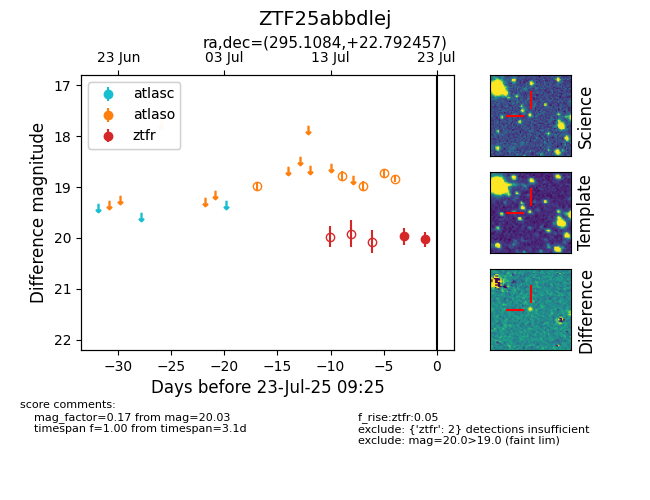

Target ZTF25abbdlej at 2025-07-23 12:37, see:
FINK: fink-portal.org/ZTF25abbdlej
Lasair: lasair-ztf.lsst.ac.uk/objects/ZTF25abbdlej
ALeRCE: alerce.online/object/ZTF25abbdlej
alt names
ZTF25abbdlej (ztf,fink)
coordinates:
equatorial (ra, dec) = (295.1084,+22.79246)
galactic (l, b) = (58.6513,+0.14731)
photometry
last atlaso=18.84, ztfr=20.03
5 atlaso, 2 ztfr detections
